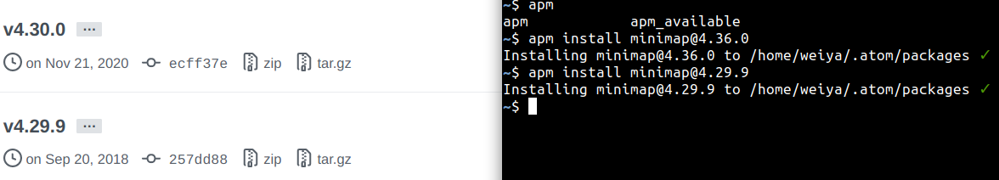
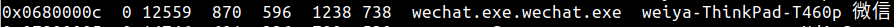

Application Software on Linux¶
According to Wikipedia, computer software can be divided into
- Application Software
- System Software
- Operating systems
- Device drivers
- Utilities
The previous section System can be viewed as the second category, while the next section would contain many useful command line tools, which might be treated as part of the first category. Thus, this section would contain comprehensive application software, and most of them have a GUI.
Atom¶
atom 自动更新¶
sudo add-apt-repository ppa:webupd8team/atom
sudo apt-get update
proxy 设置¶
Atom 的包管理器是 apm，其中有介绍怎么设置 proxy，即
apm config set strict-ssl false
apm config set http-proxy http://127.0.0.1:8118
spell-check¶
By default, one of the core package spell-check does not check .tex file, although there is another package for checking the spelling in .tex, it does not work and not recently update, then I investigate the spell-check package to add the support for .tex. Actually, it is quite easy, just to add the scope of the .tex file, which can be found by Editor: Log Cursor Scope. So I add text.tex.latex, but it would be annoying to highlighter the native latex command, such as \newcommand, then I found that there is a Excluded Scopes in the config page of spell-check, so we only need to add the scope name of such native latex command, which again can be found by Editor: Log Cursor Scope if we put the cursor on the line of the commands. Finally, I add
meta.preamble.latex, punctuation.definition.arguments.end.latex, support.function.general.tex, support.type.function.other.latex, storage.type.function.latex, markup.underline.link.https.hyperlink
to the whitelist, each of which is identified by tries, such as cannot continue to add meta.group.braces.tex since the original text would also cannot be checked.
Soft wrap¶
Soft wrap is proper for .tex file, or .md file, but not necessary for the programming file. We can turn off the soft wrap globally in Setting > Editor, and actually we can reset it for each language, which can be toggled in Setting > Package > language-<language name> > Soft Wrap.
refer to Toggle Soft Wrap by Default?
minimap¶
装好用了一晚上，但是第二天用的时候却怎么也打不开了，尝试设置 Key binding，即便已经设置为了自动启动，所以原因并不是这个。
后来通过 apm 安装低版本便成功了！

terminal¶
之前一直在使用 Platformio Ide Terminal v2.10.1, 但是最近一段时间经常打不开 terminal，后来在其 repo issue 中看到类似的问题，然后有人指出这个 package 其实不再维护，并且推荐了
- terminus: https://github.com/bus-stop/terminus
- x-terminal: https://github.com/bus-stop/x-terminal
打不开 terminal 的原因应该与下文中提到的 VS code 类似，在替换自动启动方式之前，试过在 x-terminal 中启动程序 /bin/bash 添加 --noprofile 选项，但是报错，于是直接选择了 terminus.
Toggle Symbol¶
It is quite convenient to use the shortcut Ctrl + R to select the functions, particularly in Julia. Just want to find the equivalent behavior in VScode, the first thing is to find the official name of such a behavior.
I found the Keybindings table in the Setting panel, and knew that this is called “Toggle file symbols”.
Based on this hint, I found the the corresponding shortcut in VScode, that is, Ctrl + Shift + ., refer to Go to next method shortcut in VSCode
BaiduPan 百度网盘¶
发现百度网盘出了 Linux 版，但是在 Ubuntu 16.04 似乎运行不了——能下载安装但是无法打开运行。
目前版本为 Linux版 V2.0.2（更新时间：2019-07-25）
官网显示目前只支持
适应系统：中标麒麟桌面操作系统软件（兆芯版） V7.0、Ubuntu V18.04
于是寻找替代方案。
bcloud¶
项目地址：https://github.com/XuShaohua/bcloud
但是四五年没有更新了。安装试了一下，登录不了，遂放弃。
PanDownload¶
不需要安装客户端，只需要输入网盘分享链接和提取码，便可以下载文件（而百度网盘本身下载文件需要打开客户端）。不过速度似乎不咋地
bypy¶
逛到了另外一个客户端，项目地址：https://github.com/houtianze/bypy
还挺活跃，五个月前有更新。
测试了一下，相当于在网盘内新建了 /apps/bypy 文件夹，然后可以同步该文件夹内的内容，似乎不能直接对文件夹外的文件进行操作。尽管这样，也是很好的了，以后文件可以存放在这个文件夹下。
当然，还是期待官网本身支持。
常用命令：
bypy syncup
bypy syncdown
Chrome¶
disable running in background¶
To diagnose high memory usage, I found chrome is still running in background even if it has been closed,
~$ ps -e -o pid,cmd,%mem --sort=-%mem | grep google
13404 /opt/google/chrome/chrome - 1.9
13622 /opt/google/chrome/chrome - 1.3
632184 /opt/google/chrome/chrome - 0.7
13448 /opt/google/chrome/chrome - 0.6
13610 /opt/google/chrome/chrome - 0.6
1601941 /opt/google/chrome/chrome - 0.4
...
To disable it, click Setting > Advanced > System, and then turn off the option
continue running background apps when Google Chrome is closed.
Here is a 如何看待 PC 版 Chrome 关闭后仍然可以在后台运行？ - 知乎.
disable reading list¶
the new version releases the reading list, then every time I press star requires to select to add to bookmarks or reading list, that make me annoyed. I found some guys have the same feeling, the solution is to enter
chrome://flags/#read-later
and then disable reading list.
黑屏¶
参考 chrome黑屏解决
进入休眠状态后，睡了一晚上，第二天早上打开 chrome 便黑屏了，然后采用
chrome -disable-gpu
再设定
Use hardware acceleration when available
沙盒 sandbox¶
在 Julia 中使用 Plotly 画图时，报出
[0531/160811.236665:ERROR:nacl_helper_linux.cc(308)] NaCl helper process running without a sandbox!
Most likely you need to configure your SUID sandbox correctly
通过 ps -aef | grep chrome 查看 chrome 的运行参数，没有发现 no-sandbox，即默认应该是开启的，所以现在不清楚了。
Docker¶
see docker
Droidcam¶
Homepage: DroidCam
First of all, install Linux client following the official instruction
Mix2s¶
- install the Android app on Mix2s
- 因为无法设置在一个局域网中，所以测试 USB 连接。根据连接指南，需要打开 USB debugging，然而似乎仍然无法成功。
- 根据错误提示运行
adb devices，并没有显示任何安卓设备的连接。另外lsusb并没有手机的记录，而且插上前后lsusb项目个数不变。 - 可能电脑端缺少驱动，试图寻找 USB driver，如www.xiaomidriversdownload.com但是只找到 for windows 的版本（后来证明并不需要，只是 USB 线的原因）。
Mi4c¶
同 Mix2s，不过换了长的那根数据线后，lsusb 多了条记录
$ lsusb
Bus 001 Device 033: ID 2717:ff68
不像其它记录那样有具体的名字，找到同样的问题，adb devices not working for redmi note 3 on ubuntu。经查，该文件位于 /lib/udev/rules.d，下载仓库中最新的 51-android.rules
$ cat 51-android.rules | grep ff68
$ sudo cp 51-android.rules 51-android.rules.old
$ sudo cp ~/Downloads/51-android.rules .
但是 lsusb 并没有立即生效，又不想重启，于是试了 How to reload udev rules without reboot?，
$ udevadm control --reload-rules
以及
$ pkill -HUP udevd
但是仍没有显示名字。
iPad¶
- firstly, install the APP
- 因为插上 iPad 后，自动跳出是否信任本设备，而且在
lsusb中找到记录Bus 001 Device 018: ID 05ac:12ab Apple, Inc. iPad 4/Mini1。 - 然后在电脑端开启连接，这样就能使用ipad的摄像头了。在zoom中，开启摄像头那里有切换至 Droidcam 的选项。
Emacs¶
常用命令¶
- 切换缓存区：C-o
- 水平新建缓存区：C-2
- 垂直新建缓存区：C-3
- 关闭当前缓存区：C-0
- 删除缓存区：C-k
- 只保留当前缓存区：C-1
Emacs使用Fcitx中文¶
参考博客：fcitx-emacs
- Step 1: 确定系统当前支持的字符集
locale -a
若其中有 zh_CN.utf8，则表明已经包含了中文字符集。
- Step 2: 设置系统变量
emacs ~/.bashrc
export LC_CTYPE=zh_CN.utf8
source ~/.bashrc
- 配置文件: http://download.csdn.net/download/karotte/3812760
- 自动补全: 参考emacs自动补全插件auto-complet和yasnippet，安装、配置和扩展
Geeqie¶
Install with
sudo apt install geeqie
which can show the pixel info, and is first used when developing the script for the perspective transformation.
Refer to Which image viewer is able to show coordinates?
Google Drive¶
refer to Ubuntu 16.04 set up with google online account but no drive folder in nautilus
Note that you should run
gnome-control-center online-accounts
in the command line, not to open the GUI.
ImageMagick¶
Perspective Transformation¶
I usually take many photos when listening to the seminars, it is desirable to extract only the slides and discard the nuisance background. Direct cropping is not enough since the photos are not parallel to the screen.
The solution is called perspective transformation, which can be done via -distort method, the usage is
$ magick input.jpg -distort perspective 'U1,V1,X1,Y1 U2,V2,X2,Y2 U3,V3,X3,Y3 ... Un,Vn,Xn,Yn' output.jpg
where U,V on the source image is mapped to X,Y on the destination image.
The interesting area is the mapped sub region, and so we need to further crop them out, which can be done with -crop geometry, where the geometry is defined with WxH+x+y, which means the region of size WxH located at the xy-coordinates (x, y), see more details in Anatomy of the Command-line
Refer to the source code for more details.
Tip
The original record on the development is here.
- Demo One: processing a single file

- Demo Two: processing multiple files in a folder

Some references:
- Displaying the coordinates of the points clicked on the image using Python-OpenCV
- 4 Point OpenCV getPerspective Transform Example
Todo
Wrap it into a GUI program. Possible references:
Add HEIC support in ImageMagick¶
Fail
failed.
上次从源码按安装了 ImageMagick 7.0.10-6，刚刚又看到可以添加对 HEIC 格式的支持，于是准备重新编译安装
$ ./configure --with-modules --with-libheif
...
Option Value
------------------------------------------------------------------------------
...
Delegate library configuration:
...
HEIC --with-heic=yes no
跟 HEIC 似乎只有这一条，但其实如果去掉 --with-libheif，结果并不会有变化，后来发现这个选项其实并没有正确识别，
configure: WARNING: unrecognized options: --with-libheif
configure:
然后试着
sudo apt-get install libheif1
但最后一列还是 no，然后再试着
sudo apt-get install libheif-dev
最后一列终于变成 yes 了。于是继续 make，然而却报出了 bug
coders/heic.c: In function ‘ReadHEICColorProfile’:
coders/heic.c:143:5: warning: unused variable ‘length’ [-Wunused-variable]
length;
^~~~~~
coders/heic.c: In function ‘ReadHEICImage’:
coders/heic.c:452:9: warning: implicit declaration of function ‘heif_context_read_from_memory_without_copy’; did you mean ‘heif_context_read_from_memory’? [-Wimplicit-function-declaration]
error=heif_context_read_from_memory_without_copy(heif_context,file_data,
^~~~~~~~~~~~~~~~~~~~~~~~~~~~~~~~~~~~~~~~~~
heif_context_read_from_memory
coders/heic.c:452:8: error: incompatible types when assigning to type ‘struct heif_error’ from type ‘int’
error=heif_context_read_from_memory_without_copy(heif_context,file_data,
^
At top level:
coders/heic.c:94:3: warning: ‘xmp_namespace’ defined but not used [-Wunused-const-variable=]
xmp_namespace[] = "http://ns.adobe.com/xap/1.0/ ";
^~~~~~~~~~~~~
Makefile:10388: recipe for target 'coders/heic_la-heic.lo' failed
make[1]: *** [coders/heic_la-heic.lo] Error 1
make[1]: Leaving directory '/home/weiya/src/ImageMagick-7.0.10-6'
Makefile:5988: recipe for target 'all' failed
make: *** [all] Error 2
Input Methods for Chinese¶
Info
目前试用 ibus-rime……
fcitx-sougou¶
需要 fcitx，若没有装，
sudo apt-get install fcitx-bin
sudo apt-get install fcitx-table
然后将输入法切换成 fcitx，在设置中语言那里，
最后下载按照搜狗输入法，安装时我出现这样的问题导致安装失败，
No such key ‘Gtk/IMModule’ in schema ‘org.gnome.settings-daemon.plugins.xsettings’ as specified in override file ‘/usr/share/glib-2.0/schemas/50_sogoupinyin.gschema.override’; ignoring override for this key.
参考 Install sogoupinyin on ubuntu 16.04LTS, with error ‘Gtk/IMModule’，将 /usr/share/glib-2.0/schemas/50_sogoupinyin.gschema.override 中的 IMModule 一行改成
overrides={'Gtk/IMModule':<'fcitx'>}
然后再运行
sudo glib-compile-schemas /usr/share/glib-2.0/schemas/
再次安装便成功了。
最后在语言栏中添加搜狗拼音的输入法即可。
参考 解决Ubuntu 18.04中文输入法的问题，安装搜狗拼音
fcitx-googlepinyin¶
因为最近发现 wechat 崩溃时经常是无法切换到中文输入，所以怀疑会不会是搜狗输入法引起的，于是想尝试不同的中文输入法。在知乎上看到这个问题，Ubuntu 上最好用的中文输入法是什么？
里面也有人反映搜狗输入法会导致其他程序崩溃，
搜狗输入法导致Jetbrains全家桶崩溃 @口袋里的星辰 ubuntu用搜狗输入法，会出各种问题，有其实和linux版微信一起用，坑就更多了。。@南瓜派三蔬
于是更加坚定尝试其他输入法，因为很多人都推荐了谷歌拼音，便首先尝试了它。因为此前在装搜狗的时候已经将 ibus 换成了 fcitx，所以后面只需要添加新的输入法即可，
$ sudo apt install fcitx-googlepinyin
然后重启输入法（无需重启电脑），再打开输入法配置界面，此时不出意外已经有 google pinyin 的选项。因为一种输入法就足够了，而且避免后台影响，取消了搜狗输入法（并没有卸载程序）。
试用了一下，还行，只是界面略微有点丑，不过这也不是重点。
fcitx-baidu¶
既然添加个输入法这么简单，那索性再试试其它的，百度输入法可以在其官网中下载的到 .deb 文件，然后安装并重启输入法。
正如上述知乎回答提到的，它乱码了！
fcitx-rime¶
这主要是繁体中文，不过似乎应该也能切换简体。本身这是基于 ibus 的，不过 fcitx 团队有在维护 fcitx 的版本，
$ sudo apt install fcitx-rime
因为想同时比较其与谷歌拼音的体验，所以目前同时保留了这两个输入法，可以通过 SHIFT+CTRL 快速切换输入法。
RIME 默认是繁体的，可以通过 CTRL+` 来切换简繁体，另外也有全半角等设置。
Note
除了这些在 fcitx4 上的方案，也许过段时间会尝试更新的输入法框架 fcitx5
虽然谷歌拼音和fcitx-rime都表现得不错，但是默认的 UI 实在有点丑，看到 kimpanel 会比较好看，想试一试，采用 gnome-shell 安装，但是竟然 no popup window，虽放弃。
ibus-rime¶
虽然 kimpanel 行不通，但是 wengxt 的回答让我意识到兴许 ibus 可以试一试。
最开始用 ubuntu 的时候用过一段时间 ibus，那时应该还是在 14.04 的机子上，确实不太好用，后来一直换成了 fcitx。不过现在版本已经 18.04 了，兴许会好点，而且比较喜欢这种 ui 跟系统很配的感觉。

但是明显感觉连续功能确实还不跟够好。另外有个问题是，在浏览器或者 libreoffice 中输入时，备选框总在左下角，解决方案为
$ sudo apt install ibus-gtk
因为 rime 本身就是 ibus 的，而且在 fcitx 环境下体验效果确实不错，所以想试试 ibus-rime。
$ sudo apt-get install ibus-rime
因为 ibus 是系统默认的，所以其不像 fcitx 有单独的配置框，而是直接在系统设置的 “Region & Language” 中进行设置，添加 “Input Source” 即可。
Tips:
- 输入外国姓名中的点：中文输入法状态下
Shift + \ - 自定义快捷键，取消
Ctrl + `` 的快捷键，在~/.config/ibus/rime新建文件default.custom.yaml`，然后写入
patch:
"switcher/hotkeys": # 這個列表裏每項定義一個快捷鍵，使哪個都中
- F4
其实也就是删去 Control+grave，详见 一例、定製喚出方案選單的快捷鍵。修改完成后需要点击右上角输入法菜单中的 “部署”。
Kazam¶
Ubuntu 下 kazam 录屏 没声音解决方案
http://www.cnblogs.com/xn–gzr/p/6195317.html
Kazam video format¶
cannot open in window
solution
ffmpeg -i in.mp4 -pix_fmt yuv420p -c:a copy -movflags +faststart out.mp4
refer to convert KAZAM video file to a file, playable in windows media player
ksnip¶
Info
Post: 2021-10-02 10:54:23
Since shutter has stopped developing, and it seems not friendly on Ubuntu 20.04, find the alternative, Ksnip
Install it via snap,
~$ sudo apt-get install ksnip
[sudo] password for weiya:
Reading package lists... Done
Building dependency tree
Reading state information... Done
No apt package "ksnip", but there is a snap with that name.
Try "snap install ksnip"
E: Unable to locate package ksnip
~$ snap install ksnip
ksnip 1.9.1 from Damir Porobic (dporobic) installed
But note that it cannot access the external disk drive as in Okular. Hopefully, use the following line
snap connect ksnip:removable-media
can enable the access to external disk.
Generally, it requires the software shipped with removable-media plug, as mentioned in How to get access to USB-storage from an application installed as Snap? - Ask Ubuntu
nautilus¶
It is a file manager for GNOME.
no “new document” in right click menu¶
Surprisingly, no “new document” in the right-click menu on Ubuntu 18.04, then I found the post which also mentioned this inconvenience, and it gives a wonderful solution. Use Templates!! Never use this folder before!
Just create an empty file, say README.md, then there will be a New Document in the right-click menu.
Also check the official documentation on Templates
A file template can be a document of any type with the formatting or content you would like to reuse.
Octave¶
另外帮助文档见GNU Octave
Okular¶
当初使用 Ubuntu 16.04 时，Okular 是通过 snap 安装的，可能参考了这个?
sudo snap install okular
但是更新到 Ubuntu 18.04 后，发现在移动硬盘的文档打不开，而之前没碰到过这样的问题，一开始还以为是移动硬盘命名问题，之前曾经碰到过某个程序（忘记了）不允许路径存在空格，而移动硬盘默认名字有空格，于是曾经更改过名字（忘记了怎么更改）。原本以为可能更新系统使得这个更改失效了，还想着再找找怎么更改，但是找到一堆怎么更改卷标名的，最后才发现路径中名字确实应该更改成功了。
所以问题还是回到 okular 本身，通过 snap 和 apt 安装是两个不同的版本，图标也有点差异，然后发现也有人跟我有同样的问题，有人回复说
Okular does not support removable media while installed as Snap.
于是卸掉 snap 版的 okular，转而安装 apt 版本的，
sudo apt-get install okular
类似地，通过 snap 安装的 gimp 不能打开移动硬盘中的文件，但是如果换成 apt-get 安装的，则又不支持 .heic 文件格式。
发现有些图标不能正常显示，网上也找到了类似的问题，
尝试了其中的解决方案，但均未成功，最后的解决方案是 navigation panel icons missing on standard install of 17.04
As a workaround, what worked for me was:
$ sudo apt install systemsettings kde-config-gtk-style kde-config-gtk-style-preview oxygen-icon-theme
* systemsettings for the app systemsettings5;
* kde-config-gtk-style enables the Appearance module in systemsettings5;
* kde-config-gtk-style-preview allows previewing the themes without restarting the GTK applications;
* oxygen-icon-theme is an alternative theme to use in KDE applications.
Then, run systemsettings5, click on Application Style, select Oxygen as a Fallback theme, click on Apply.
最后我的配置是

可以尝试不同配置，因为刚开始打开的，似乎并不是之前系统的配置。
latex in annotation¶
okular 的 note 功能支持 LaTeX，当输入 $$...$$ 时会提示要不要转换为 latex，点击后但是报错，
latex is not executable
注意到 latex 的 PATH 是定义在 .bashrc 中，而通过 zotero 调用 okular 时并不会 source .bashrc，只有通过 bash shell 调用的程序采用 source 到 .bashrc，也就是在终端中调用 okular 时，latex 显示正常。
研究图形界面程序调用 path 的机制似乎是一种解决方案，但觉得可能过于复杂，其实之前在 atom 中也出现过类似的问题。可能的方案是在 .profile 中添加 PATH，可能有用的参考博客。
于是我采用更简单的方案，在 /usr/bin 中添加 latex 的 soft link，添加后报了新错，
dvipng is not executable
但至少证明这条思路是可行的，于是继续添加 dvipng 的 soft link，最后解决了问题！
自定义签名¶
可以通过 stamp 功能自定义签名，首先准备好签名图片，然后保存到某个文件夹，比如 ~/.kde/share/icons/signature.png，然后进入 stamp 的配置界面，下拉框中直接输入签名图片所在的路径。参考 How to add a Signature stamp to Okular
但是并不能存为 pdf，或者被其他软件看到，用 Acrobat 打开会有个打叉的部分，但是看不到签名，已经被标记为 bug，但似乎还未解决。
pdf background color¶
set background color for visable screenshots.
refer to Is there a pdf reader allowing me to change background color of (arXiv) pdfs?
duplicate icons¶
When opening multiple pdf files, it results duplicate icons, such as

The solution is
- copy the desktop file
mv /usr/share/applications/okularApplication_pdf.desktop .local/share/applications/
- add the following line to the end
StartupWMClass=okular
then close all pdf files opened by okular, and re-open them, then they will be grouped into a single icon.
Refer to
or for other software,
A by-product tip learned from the above question,
- use
Alt + backstickcan switch the same application.
OneDrive¶
In fact, the following client on Ubuntu is also in the command-line form. But usually, we refer to OneDrive as the whole of the client and the host, which is visited via a browser.
first try¶
xybu/onedrive-d-old, but doesn’t support exchange account.
second try¶
skilion/onedrive, perfect!
note that the automatic monitor would occupy much CPU, the service can be disable or enable by the following command,
~$ systemctl --user disable onedrive
Removed /home/weiya/.config/systemd/user/default.target.wants/onedrive.service.
~$ systemctl --user enable onedrive
Created symlink /home/weiya/.config/systemd/user/default.target.wants/onedrive.service → /usr/lib/systemd/user/onedrive.service.
but it seems that we also need
systemctl --user start onedrive
systemctl --user stop onedrive
fuseblk¶
发现使用 onedrive 同步文件时，有时候并不能够同步。猜测可能是因为文件太小，比如文件夹 test 中仅有 test.md 文件（仅70B），而此时查看 test 大小，竟然为 0 B，因为根据常识，一般文件夹都是 4.0k，或者有时 8.0k 等等，具体原因参考 Why does every directory have a size 4096 bytes (4 K)?
但我现在问题是文件夹竟然是 0B，猜测这是无法同步的原因。
后来在上述问题的回答的评论中 @Ruslan 提到
@phyloflash some filesystems (e.g. NTFS) store small files in the file entries themselves (for NTFS it’s in the MFT entry). This way their contents occupy zero allocation blocks, and internal fragmentation is reduced. – Ruslan Nov 2 at 9:03
猜测这是文件系统的原因，因为此时文件夹刚好位于移动硬盘中，所以可能刚好发生了所谓的 “internal fragmentation is reduced”。
于是准备查看移动硬盘的 file system 来验证我的想法，这可以通过 df -Th 实现，具体参考 7 Ways to Determine the File System Type in Linux (Ext2, Ext3 or Ext4)
然后竟然发现并不是期望中的 NTFS，而是 fuseblk，東海陳光劍的博客中解释道
fuse是一个用户空间实现的文件系统。内核不认识。fuseblk应该就是使用fuse的block设备吧，系统中临时的非超级用户的设备挂载好像用的就是这个。
最后发现，onedrive 无法同步的原因可能并不是因为 0 byte 的文件夹，而是因为下面的命名规范，虽然不是需要同步的文件，而是之前很久的文件，但可能onedrive就在之前这个不规范命名的文件上崩溃了。
windows 命名规范¶
在使用 skilion/onedrive 同步时，一直会出现碰到某个文件崩溃。查了一下才知道是需要遵循 Windows 命名规范，其中有两条很重要
- Do not assume case sensitivity. For example, consider the names OSCAR, Oscar, and oscar to be the same, even though some file systems (such as a POSIX-compliant file system) may consider them as different. Note that NTFS supports POSIX semantics for case sensitivity but this is not the default behavior.
- The following reserved characters:
- < (less than)
-
(greater than)
- : (colon)
- ” (double quote)
- / (forward slash)
- (backslash)
- | (vertical bar or pipe)
- ? (question mark)
-
- (asterisk)
Change to abraunegg/onedrive¶
I found that it will auto run after startup, actually with skilion/onedrive, sometimes it also starts automatically. Then I tried
$ sudo systemctl disable onedrive.service
Failed to disable unit: Unit file onedrive.service does not exist.
and then I note that OneDrive service running as a non-root user via systemd (with notifications enabled) (Arch, Ubuntu, Debian, OpenSuSE, Fedora)
then I tried
$ sudo systemctl disable onedrive@weiya.service
no error.
Then I also tried
$ systemctl --user disable onedrive
Removed /home/weiya/.config/systemd/user/default.target.wants/onedrive.service.
It seems OK now, and pay attention to the difference of the above similar commands.
sync shared folder¶
refer to How to configure OneDrive Business Shared Folder Sync for full instruction.
# list remote shared folder
$ onedrive --list-shared-folders
# configure folder to share
$ vi ~/.config/onedrive/business_shared_folders
# perform sync (--resync is needed when the config file has been updated)
$ onedrive --synchronize --sync-shared-folders [--resync]
Peek¶
homepage, easy to use, can convert to gif.
Rhythmbox¶
右键似乎可以修改歌曲的 properties，其中包括 artist，album，但是却不能编辑，然后查了一下，是权限问题，
chmod u+w CloudMusic/ -R
where more details about u+w can be found in the manual.
$ man chmod
The format of a symbolic mode is [ugoa...][[-+=][perms...]...], where perms is
either zero or more letters from the set rwxXst, or a single letter from the
set ugo. Multiple symbolic modes can be given, separated by commas.
A combination of the letters ugoa controls which users' access to the file will
be changed: the user who owns it (u), other users in the file's group (g),
other users not in the file's group (o), or all users (a). If none of these
are given, the effect is as if (a) were given, but bits that are set in the
umask are not affected.
但是对 .wav 文件仍不能编辑 properties，后来才知道应该是 wav 不支持 tag
但是还是有方法来修改的，比如 How do I edit a metadata in a WAV file?
于是我尝试了 kid3
sudo add-apt-repository ppa:ufleisch/kid3
sudo apt-get update
sudo apt-get install kid3 # KDE users
一开始觉得 kid3-cli 足够了，但是试了一下感觉学习成本太高，索性换回 kde 版本的。
但是似乎在 kid3 中修改完并没有信息，只是会把删去的 genre 信息变为 unknown。
Rstudio¶
Failed to create OpenGL context¶
Info
Refer to rstudio #27 for the raw records.
It throws
WebEngineContext used before QtWebEngine::initialize() or OpenGL context creation failed.
Failed to create OpenGL context for format QSurfaceFormat(version 2.0, options QFlags<QSurfaceFormat::FormatOption>(), depthBufferSize 24, redBufferSize -1, greenBufferSize -1, blueBufferSize -1, alphaBufferSize -1, stencilBufferSize 8, samples 0, swapBehavior QSurfaceFormat::DefaultSwapBehavior, swapInterval 1, colorSpace QSurfaceFormat::DefaultColorSpace, profile QSurfaceFormat::NoProfile)
Aborted (core dumped)
when launching without any special actions. Same error after replacing with an older version.
Laterly, note that nvidia card does not work, and change to another driver. Then it resumes after rebooting.
不能切换中文输入（fctix）¶
曾经按照上述的指导能够解决这个问题，即将系统的 qt5 的 libfcitxplatforminputcontextplugin.so 手动添加到 rstudio 安装目录下的 plugins 中，即
sudo ln -s /usr/lib/$(dpkg-architecture -qDEB_BUILD_MULTIARCH)/qt5/plugins/platforminputcontexts/libfcitxplatforminputcontextplugin.so /usr/lib/rstudio/bin/plugins/platforminputcontexts/
但是后来又失败了，猜测原因可能是 qt5 的版本不再兼容了。在 Rstudio 顶部的菜单栏中，点击 Help > About Rstudio 可以找到具体的 qt 版本信息，比如 RStudio (Version 1.2.5001) 依赖 QtWebEngine/5.12.1，而系统的 Qt 插件版本没那么高，所以也能理解 libfcitxplatforminputcontextplugin.so 为什么不再有用了。一种解决方案便是手动重新编译与 Rstudio 中匹配的 Qt 插件的版本，但是似乎比较繁琐，而且也不能一劳永逸，如果 rstudio 更新，还是会失效。
索性不折腾了。如果真的需要中文，就用其他编辑器吧。期待 rstudio 官方早日解决这个问题……
更新rstudio 后闪退¶
安装 rstudio 应该采用
sudo apt-get install gdebi-core
wget https://download1.rstudio.org/rstudio-1.0.44-amd64.deb
sudo gdebi rstudio-1.0.44-amd64.deb
而非
sudo dpkg -i
另外，如果不行，删除后再装
sudo apt-get remove rstudio
Synergy¶
lock key from host¶
With Host@t460p(Ubuntu 18.04) and Client@STAPC(Win 10), the hotkey Win + L for locking the screen does not work on the client, but the hotkey would work if I use its keyboard.
An ideal solution would be simultaneously to lock the key via the same hotkey, as someone discussed in Synergy: Is there a way to push Win+L to all screens, not just the server?
First of all, I become to use the custom behavior by defining some keystrokes via
Configure Server -> Hotkeys -> New Hotkey -> New its associated Actions
A complete instruction can be found in Add a keyboard shortcut to change to different screens
Since Win+L fails on the client, try to define a new shortcut. Following the 4th method in How to Quickly Lock Screen In Windows 10,
Right Click -> New Shortcut -> C:\Windows\System32\rundll32.exe user32.dll,LockWorkStation
Then we can lock the screen after clicking this shortcut, but currently no associated hotkey. Right click to edit the properties, there is a shortcut key, which by default assumes the key starts with Ctrl + Alt, so just press the remaining key, say L. However, Ctrl + Alt + L does not work.
Instead, Ctrl + Alt + 2 works.
Then back to the host configuration. Bind the follow two keys,
keystroke(Control+Alt+l) = keystroke(Alt+Control+2,stapc220)
then I can lock the screen of client via Ctrl+Alt+l.
Since the above binding can specify the machine, I am thinking it might work if I bind Ctrl+Alt+l to Meta+l on the host. However, it failed, and it causes the screen of client cannot be locked.
Anyway, the current solution seems already convinent.
Terminator¶
- hostname 的颜色, 去掉
.bashrc中
##force_color_prompt=yes
的注释
- hide hostname,
weiya@weiya-ThinkPad-T460p:
edit the following line in the .bashrc as follows
if [ "$color_prompt" = yes ]; then
#PS1='${debian_chroot:+($debian_chroot)}\[\033[01;32m\]\u@\h\[\033[00m\]:\[\033[01;34m\]\w\[\033[00m\]\$ '
PS1='\[\033[01;34m\]\w\[\033[00m\]\$ '
else
PS1='${debian_chroot:+($debian_chroot)}\u@\h:\w\$ '
fi
before hide and after hide

- 颜色背景色等，直接右键设置，右键设置完成之后便有了一个配置文件，
~/.config/terminator/config.
shortcut¶
the shortcut list can be found in Right Click > Preferences > Keybindings, several more common
- resize:
Shift+Ctrl+Left/Right/Down/Up
Thunderbird¶
- 添加学校邮箱时，必须采用学号形式的邮箱，不要用 alias 形式的，alias 验证会出问题。
Bcc¶
Info
Post: 2022-04-02 18:12:48
最近小伙伴们在讨论为什么 Eesther 群发的邮件的 To 是她自己的邮箱。通过 More > View Source 查看邮件源码时发现，有个 Delivered-To 字段，恰好是 grad 的邮箱。于是猜想怎么实现这种效果，bcc？
于是简单做了个实验，从 A 邮箱发给 B 并密送给 C
From: A
TO: B
Bcc: C
在 B 端查看源码发现只有 TO: B，而在 C 端既有 Delivered-To: C，也有 TO: B。
所以 Esther 一种可能的原因是在 bcc 中输入 grad 的邮箱，并发送给自己。但感觉这样很奇怪，可能有其它自动设置，具体不得而知。关于 Delivered-To 的讨论可另见 
Deactivation¶
Since the visiting Harvard email account has expired, it will always pop up the log-in window. But I do not want to delete the account, and just want to avoid the automatically log-in, so I try to set to never check new message as follows,

refer to deactivate email account without deleting | Thunderbird Support Forum
Gmail¶
与其它邮箱帐号不同的是，添加 Gmail 后只有 Inbox 和 Trash，而没有 Sent, Drafts 等，不过有个 [Gmail] 文件夹，里面的子文件便有发件箱等等。这种特殊目录结构是因为对 Gmail 的不同处理方式，详见 Special Gmail
Proxy for Gmail in Thunderbird¶
Setting a proxy for the thunderbird is quite straigtforward, but not all mail accounts need the proxy, only gmail in my case. I am considering if it is possible to set up a proxy for gmail separately. Then I found that setting proxy by PAC file might work inspired by Gmail imap/smtp domains to connect via proxy, since PAC file can customize the visited url.
Then I need to learn how to write a PAC file, although later I directly export the rules written in SwitchyOmega to a PAC file.
Once PAC is done, I need to write its location url, seems impossible to directly write a local path. One easy way is to open port 80 to access my laptop, which maybe need apache or nginx, but both of them are overqualified. A simple way is
sudo python -m SimpleHTTPServer 80
found inOpen port 80 on Ubuntu server
Upgrade 68 to 78¶
最近，学校强制要求使用 2FA，但是根据之前短暂的使用经验，2FA 对邮箱客户端的支持很有限，比如就不支持 Ubuntu 系统上的 thunderbird，所以那次用完之后立马发邮件申请注销（因为 2FA 一旦设定自己无法取消）。
不过幸运的是，看到最近新版本的 thunderbird 支持 Oauth2，比如 Thunderbird 77 supports IMAP using OAuth2 on Office 365. See https://bugzilla.mozilla.org/show_bug.cgi?id=1528136 for more details. Office 365 (Thunderbird) - Configure Modern Authentication
所以准备试试下载新版本，因为似乎不能直接简单的 upgrade 升级到 78.
一开始填错了服务器，漏掉了 outlook.office365.com 中的 365，还以为 78 不行，毕竟前面两个给的链接说是 77beta，万一 beta 的功能又被砍掉了呢：（后来发现是杞人忧天
将验证方法改为 Oauth2，然后重启便跳出了熟悉的登录界面，大功告成！
不过有个问题是，这两个版本是同时存在的，profile 是不共用的，我如果要用 78，还需要把其他邮箱重新设置一遍，已经订阅过的 feeds。此处应有简单方法，
关闭所有 thunderbird，然后启动 78 时加上 -Profilemanager
thunderbird -Profilemanager
这时会要求选择 profile，只需要选择 68 对应的 profile 就好了。选好之后，再重新配置下学校邮箱的，则大功告成！
Train adaptive junk filter¶
more instructions: Thunderbird and Junk / Spam Messages
ToDesk¶
Homepage: https://www.todesk.com/download_detail.html
Currently, the Linux version is in Beta.
Transmission¶
- Configuring Transmission for faster download - Ask Ubuntu
- Transmission says port is closed but seeding is happening - Ask Ubuntu
Vi/Vim¶
u: undo,ctrl+u: redo
复制¶
- 单行复制: 在命令模式下，将光标移动到将要复制的行处，按“yy”进行复制；
- 多行复制: 在命令模式下，
nyy+p:6,9 co 12:复制第6行到第9行之间的内容到第12行后面。- 设置标签，光标移到起始行（结束行，粘贴行），输入
ma(mb,mc):'a, 'b co 'c。
Tip
将 co 改成 m 就变成剪切了。
删除¶
- 删除光标后的字符
d$ :.,$d: 删除当前行到最后一行
参考 How to Delete Lines in Vim / Vi
去除 BOM¶
BOM (byte-order mark, 字节顺序标记) 是位于码点 U+FEFF 的统一码字符的名称。
在UTF-8中，虽然在 Unicode 标准上允许字节顺序标记的存在，但实际上并不一定需要。UTF-8编码过的字节顺序标记则被用来标示它是UTF-8的文件。它只用来标示一个UTF-8的文件，而不用来说明字节顺序。许多视窗程序（包含记事本）会需要添加字节顺序标记到UTF-8文件，否则将无法正确解析编码，而出现乱码。然而，在类Unix系统（大量使用文本文件，用于文件格式，用于进程间通信）中，这种做法则不被建议采用。因为它会妨碍到如解译器脚本开头的Shebang等的一些重要的码的正确处理。它亦会影响到无法识别它的编程语言。如gcc会报告源码档开头有无法识别的字符。
如果需要去除 BOM，直接 vim 打开，
:set nobomb
:wq
参考
Ctrl+s 假死¶
vim并没有死掉，只是停止向终端输出而已，要想退出这种状态，只需按 Ctrl + q 即可恢复正常。
执行当前脚本¶
:!%
其中 % expands current file name，另外
:! %:p
会指定绝对路径，而如果路径中有空格，则用
:! "%:p"
参考
write with sudo¶
For example, as said in How does the vim “write with sudo” trick work?
:w !sudo tee %
and such reference gives a more detailed explanation for the trick.
打开另外一个文件¶
参考
对每行行首进行追加、替换¶
按住 v 或者 V 选定需要追加的行，然后再进入 : 模式，输入正常的 sed 命令，如
s/^/#/g
全选：VggG 或者 ggVG，其中
gg跳至第一行，G跳到最后一行
参考 what is the command for “Select All” in vim and VsVim?
VS Code¶
Other shortcuts:
- switch to next functions:
Ctrl + Shift + ., refer to Go to next method shortcut in VSCode - switch terminals,
Ctrl+Up/Down, refer to How to switch between terminals in Visual Studio Code?
Edit Multiple Line Simultaneously¶
Press Shift + Alt + Down/Up to insert cursors below or up, after inserting >, then press Esc to exit.

Fail to open terminal¶
首先通过搜索图形界面登录，弹出
- resolving your shell environment is taking too long…
- unable to resolve your shell environment…
详见 Resolving Shell Environment is Slow (Error, Warning)
只是按照其提示检查了 ~/.bashrc，没有问题。
然后试着在命令行中输入 code 启动，此时试图打开 terminal 并没有上述信息弹出，然而 terminal 还是无法打开，在开启新 terminal 那里可以选择 log，所以当我新开一个 terminal 时，发现同时弹出下面错误消息，
[2021-03-11 10:40:29.231] [renderer1] [error] A system error occurred (EACCES: permission denied, open '/proc/1/environ'): Error: EACCES: permission denied, open '/proc/1/environ'
然后发现在 terminal.integrated.inheritEnv breaks integrated terminal #76542 中提到了 enable terminal.integrated.inheritEnv 就好。
打开 setting，然后直接输入 @modified 快速进入更改过的设置，其中便有 inheritEnv 这一项，enable 之后重新在命令行中启动 code，此时可以打开 terminal，但是出现了以下信息
$ bind: Address already in use
channel_setup_fwd_listener_tcpip: cannot listen to port: 18888
bind: Address already in use
channel_setup_fwd_listener_tcpip: cannot listen to port: 18889
Could not request local forwarding.
Warning: remote port forwarding failed for listen port 30013
Warning: remote port forwarding failed for listen port 24800
这是为了启动时自动登录服务器转发端口的程序，这时意识到 vscode 在启动时，应该会调用 .profile，但是我把自动连接服务器的程序写进了 .profile，解决办法便是复制一份 .profile 至 .bash_profile, 只在后者中保留自动登录程序，因为启动时后者调用顺序更高。
.profile is for things that are not specifically related to Bash, like environment variables $PATH it should also be available anytime. .bash_profile is specifically for login shells or shells executed at login. source: What is the difference between ~/.profile and ~/.bash_profile?
然而！似乎 vscode 启动时还是会调用 .bash_profile，只有在 .bash_profile 将自动登录程序去掉才能打开 terminal。
可能原因应该是 terminal 实际上在运行 /bin/bash 程序，而打开 bash 其还是按照正常打开顺序来的，如 man bash 中所说，
--noprofile
Do not read either the system-wide startup file /etc/profile or any of the personal initialization files ~/.bash_profile, ~/.bash_login, or ~/.profile. By default,
bash reads these files when it is invoked as a login shell (see INVOCATION below).
干脆换一种自启动方式，How to run scripts on start up?
通过 crontab -e 设置自启动任务，
@reboot sh /home/weiya/rssh4lab.sh &
然而第二次重启时，并不起作用，查看 /var/log/syslog，原因在于网络连接在于 ssh 之后
Mar 12 09:14:23 weiya-ThinkPad-T460p CRON[1464]: (weiya) CMD (sh /home/weiya/rssh4lab.sh &)
Mar 12 09:19:37 weiya-ThinkPad-T460p NetworkManager[1342]: <info> [1615511977.5232] device (wlp3s0): Activation: (wifi) Stage 2 of 5 (Device Configure) successful. Connected to wireless network 'CUHK1x'.
接下来有两个策略，参考 How do I start a Cron job 1 min after @reboot?
- sleep 一定时间：这一点可以加上
sleep 60 &&，但是 sleep 多少并不太好把握，一般来说会在进入用户界面后网络才连接，而有时候并没有及时进入用户界面 - 判断网络好了之后在执行，上述问题回答下有人指出通过
systemd来实现，其中可以指定After=network.target，按照指示设置完毕，然后还是不行，原因应该是上述所说，只有进入用户界面才会连接网络，所以在系统层面的设置太早了
另外，同时也把 ssh 替换成 autossh，然后又回到之前推荐 crontab 的问题中，采用第一种 upstart 方法，因为其可以在用户层面进行设置，但是设置完毕后在 syslog 中都没有相关运行命令，然后发现这种方法已经过时了。
既然 upstart 有 system 和 user 两个层面的方法，那么 systemd 应当也可以在用户层面进行设置，于是我找到了这个回答，How to start a systemd service after user login and stop it before user logout，这个方法在这个回答，How to run scripts on start up?，中也提到了 。
已经看到成功的希望了，不过还是报错了，
$ vi /var/log/syslog
Mar 12 12:00:03 weiya-ThinkPad-T460p systemd[2710]: Starting ssh to lab with port forward...
Mar 12 12:00:03 weiya-ThinkPad-T460p systemd[2710]: Started ssh to lab with port forward.
Mar 12 12:00:03 weiya-ThinkPad-T460p systemd[2710]: Reached target Default.
Mar 12 12:00:03 weiya-ThinkPad-T460p systemd[2710]: Startup finished in 70ms.
Mar 12 12:00:03 weiya-ThinkPad-T460p rssh4lab.sh[2722]: ssh: connect to host XX.XX.XX.XX port 22: Network is unreachable
Mar 12 12:00:03 weiya-ThinkPad-T460p autossh[2724]: ssh exited prematurely with status 255; autossh exiting
查看 autossh 的帮助文档发现，
AUTOSSH_GATETIME
Specifies how long ssh must be up before we consider it a successful connection. The default is 30 seconds. Note
that if AUTOSSH_GATETIME is set to 0, then not only is the gatetime behaviour turned off, but autossh also ignores
the first run failure of ssh. This may be useful when running autossh at boot.
而 -f 可以达到这个效果，所以试着加上 -f,便成功了！
查看相关运行信息，
$ journalctl --user -u ssh4lab.service
-- Logs begin at Thu 2020-12-24 01:44:48 CST, end at Fri 2021-03-12 12:33:18 CST. --
Mar 12 12:00:03 weiya-ThinkPad-T460p autossh[2724]: starting ssh (count 1)
Mar 12 12:00:03 weiya-ThinkPad-T460p autossh[2724]: ssh child pid is 2725
Mar 12 12:00:03 weiya-ThinkPad-T460p systemd[2710]: Starting ssh to lab with port forward...
Mar 12 12:00:03 weiya-ThinkPad-T460p systemd[2710]: Started ssh to lab with port forward.
Mar 12 12:00:03 weiya-ThinkPad-T460p autossh[2724]: ssh exited prematurely with status 255; autossh exiting
Mar 12 12:09:11 weiya-ThinkPad-T460p systemd[2710]: Stopped ssh to lab with port forward.
-- Reboot --
Mar 12 12:10:29 weiya-ThinkPad-T460p autossh[2649]: starting ssh (count 1)
Mar 12 12:10:29 weiya-ThinkPad-T460p autossh[2649]: ssh child pid is 2650
Mar 12 12:10:29 weiya-ThinkPad-T460p systemd[2634]: Starting ssh to lab with port forward...
Mar 12 12:10:29 weiya-ThinkPad-T460p systemd[2634]: Started ssh to lab with port forward.
Mar 12 12:10:30 weiya-ThinkPad-T460p autossh[2649]: ssh exited with error status 255; restarting ssh
Mar 12 12:10:30 weiya-ThinkPad-T460p autossh[2649]: starting ssh (count 2)
Mar 12 12:10:30 weiya-ThinkPad-T460p autossh[2649]: ssh child pid is 2655
Mar 12 12:10:30 weiya-ThinkPad-T460p autossh[2649]: ssh exited with error status 255; restarting ssh
Mar 12 12:10:30 weiya-ThinkPad-T460p autossh[2649]: starting ssh (count 3)
Mar 12 12:10:30 weiya-ThinkPad-T460p autossh[2649]: ssh child pid is 2656
Mar 12 12:10:30 weiya-ThinkPad-T460p autossh[2649]: ssh exited with error status 255; restarting ssh
Mar 12 12:10:30 weiya-ThinkPad-T460p autossh[2649]: starting ssh (count 4)
Mar 12 12:10:30 weiya-ThinkPad-T460p autossh[2649]: ssh child pid is 2657
Mar 12 12:10:30 weiya-ThinkPad-T460p autossh[2649]: ssh exited with error status 255; restarting ssh
Mar 12 12:10:30 weiya-ThinkPad-T460p autossh[2649]: starting ssh (count 5)
Mar 12 12:10:30 weiya-ThinkPad-T460p autossh[2649]: ssh child pid is 2658
其中 reboot 所在行上面的为没有添加 -f 选项时的日志，可以发现内容与上面查看 syslog的差不多，只不过没有那么全，比如没有指出 Network is unreachable，而后面添加了 -f 选项后，在失败重试若干次后，成功了！
w3m: Command Line Browser¶
Visit the website from command line without the disturbing of images,

Other candidates but seems not fast and smoothly,
- lynx: error in open the same website in
https, throws “Alert!: Unable to make secure connection to remote host.” - links: cannot display Chinese characters.
Some references:
WeChat in Linux¶
起因是今天网页端竟然登不上去，本来觉得用不了就算了吧，正好降低聊天时间，但是想到很多时候传传文件大家还是习惯用微信，所以还是准备捣鼓下 linux 版。我记得之前试过一种，但是那似乎也是基于网页版的，只是封装了一下。而今天看到了基于 wine 以及将其打包成 docker 的解决方案！
docker 了解一点，知道如果成功，以后安装卸载会很简单，于是使用 huan/docker-wechat 提供的 docker image，但是后来输入时文本不可见的问题很恼人 ，也不知道怎么解决。
注意到作者的 docker 是在 19.10 上构建的，在想会不会与我的 18.04 不够兼容，所以准备自己修改 docker，其实都已经 fork 好了，但是由于 wine 对 18.04 的支持有个问题，虽说可能跟输入法也不太有关，但是还是试着装这个，后面改写 docker file 时重新 build 总是出问题，一直没解决，所以决定放弃。
于是差不多想放弃 docker 了，想直接安装 wine，弊端似乎也就是卸载会有点繁，但是如果安装成功，那就用着呗，也不用卸载了。
The following packages have unmet dependencies:
gstreamer1.0-plugins-good : Breaks: gstreamer1.0-plugins-ugly (< 1.13.1) but 1.8.3-1ubuntu0.1 is to be installed
winehq-stable : Depends: wine-stable (= 5.0.0~bionic)
E: Error, pkgProblemResolver::Resolve generated breaks, this may be caused by held packages.
solution
# (re)install gstreamer1.0-plugins-good and gstreamer1.0-plugins-ugly
sudo apt-get install gstreamer1.0-plugins-good
sudo apt-get install gstreamer1.0-plugins-ugly
Error: winehq-stable : Depends: wine-stable (= 5.0.0~bionic)
It is due to FAudio for Debian 10 and Ubuntu 18.04, and
The quickest and easiest way to satisfy the new dependency is to download and install both the i386 and amd64 libfaudio0 packages before attempting to upgrade or install a WineHQ package.
seems does not work. I need to add the repository as suggested in Error: winehq-stable : Depends: wine-stable (= 5.0.0~bionic)
curl -sL https://download.opensuse.org/repositories/Emulators:/Wine:/Debian/xUbuntu_18.04/Release.key | sudo apt-key add -
sudo apt-add-repository 'deb https://download.opensuse.org/repositories/Emulators:/Wine:/Debian/xUbuntu_18.04/ ./'
but seems not due to this, and follow the instruction in docs/WineDependencies.md
sudo apt-get install libgnutls30:i386 libldap-2.4-2:i386 libgpg-error0:i386 libxml2:i386 libasound2-plugins:i386 libsdl2-2.0-0:i386 libfreetype6:i386 libdbus-1-3:i386 libsqlite3-0:i386
then the problem is solved. And continue to follow the steps in WeChat Desktop on Linux
reboot wine¶
Sometimes, the wechat window freezes, i.e., the new messages cannot be updated. Try to reboot it,
- use
wineboot
$ wineboot -s # shutdown
$ wineboot -r # restart
but it does not work, and it throws
073c:fixme:font:get_name_record_codepage encoding 29 not handled, platform 1.
- use
kill -s 9
kill the process of wechat, and then restart wechat, still not work
- use
wineserver -k
it works! refer to Ubuntu forum: Cant reboot wine
为了保留之前的所有设定及历史聊天记录，选择文件至 /media/weiya/Seagate/WeChat，但不要精确至 /media/weiya/Seagate/WeChat/WeChat Files
窗口轮廓阴影¶
当从微信切换到其他软件时，会留下一个窗口轮廓阴影。再一次感叹 google 的强大，本来这个问题我都不知道怎么搜索，但只给了 “wine wechat” 和 “窗口轮廓” 这两个关键词后，就找到了两种解决方案：
- 解决Linux下微信透明窗口的问题：切换微信后，直接关掉窗口，侧边栏也不在有微信的窗口，再次启动需要点击顶部栏的图标
- wine-wechat 窗口阴影置顶解决方案：通过
xdotool去除窗口阴影。之前折腾 docker-wechat 就看到有人提到xdotool
更偏向第二种策略，后来尝试了一下也确实觉得第二种好用，当然我都有折腾过。
其实策略本身很简单，而且都可以即时运行一下脚本，就能感受效果，但是在脚本自动化那里花了挺长时间。
策略二本来推荐的是通过修改 wechat 的启动程序，但是因为我的启动程序是通过 wine 实现的，这一点似乎跟博客中不一样，我只找到一个 WeChat.desktop 文件，也没把握直接修改。所以我先去尝试了开机自启动
开机自启动¶
实现方案有很多，但总想找种最简单的，有考虑 systemd service， How do I run a script as sudo at boot time on Ubuntu 18.04 Server?
中间也有试过 /etc/init.d，Ubuntu下添加开机启动脚本，但是报出 warning
warning: /etc/init.d/test missing LSB information
有点不放心。
另外还想到直接在 .profile 中添加运行程序，这应该算是最简单的方式，这在 Ubuntu添加和设置开机自动启动程序的方法 中有更系统的总结。
但是后来才发现，开机自启动并不适用于策略二提供的脚本，因为在判断没有微信时，程序会自动退出去。本来也想着简单改下使其能够始终运行，但是觉得这种不如原作者的更优，白白占用内存。
修改 desktop 文件¶
这个关键点在于，使其能够同时运行 wine 和 disable-wechat-shadow.py 脚本文件，原 WeChat.desktop 文件为
Exec=env WINEPREFIX="/home/weiya/.wine32" wine C:\\\\windows\\\\command\\\\start.exe /Unix /home/weiya/.wine32/dosdevices/c:/ProgramData/Microsoft/Windows/Start\\ Menu/Programs/WeChat/WeChat.lnk
第一种尝试便是直接加上 & python3 /home/weiya/disable-wechat-shadow.py，但是似乎当做了 wine 的 argument，这一点@mango也指出
The
Execkey must contain a command line. A command line consists of an executable program optionally followed by one or more arguments.
第二种便是通过 sh -c，即
Exec=env WINEPREFIX="/home/weiya/.wine32" sh -c "wine C:\\\\windows\\\\command\\\\start.exe /Unix /home/weiya/.wine32/dosdevices/c:/ProgramData/Microsoft/Windows/Start\\ Menu/Programs/WeChat/WeChat.lnk; python3 /home/weiya/disable-wechat-shadow.py"
但是这个经常报出错误
key “Exec” in group “Desktop Entry” contains a quote which is not closed
很纳闷，觉得这不应该啊，而且也有人 wine 的解决方案也是通过 sh -c，但是后来发现了个区别，别人引号中空格只需要一次转义，即 \，比如 “Program Files (x86)”，但是我这里原先没加引号时，用两个反斜杠进行转义 \\，而且 \\ 需要用 \\\\ 来转义，所以隐隐觉得可能是加了引号转义会有问题。所以尝试改成 \ 和 \\，但是都没有成功。
Tip
一般地，sh -c "command 1; command 2"可以实现在 launcher 中同时运行两个命令，参考 How to combine two commands as a launcher?
后来跑去研究下 wine 的命令，想弄清楚那一长串 argument 是什么意思，才明白这应该是句 wine start，而 /Unix 是为了用 linux 格式的路径，详见 3.1.1 How to run Windows programs from the command line，所以为了避免可能的转义问题，首先可以把 wine C:\\\\windows\\\\command\\\\start.exe 替换成 wine start，而空格转义还是用 \，即最终 WeChat.desktop 文件为
Exec=env WINEPREFIX="/home/weiya/.wine32" sh -c "wine start /Unix /home/weiya/.wine32/dosdevices/c:/ProgramData/Microsoft/Windows/Start\ Menu/Programs/WeChat/WeChat.lnk; python3 /home/weiya/disable-wechat-shadow.py"
这个版本终于成功了！
注意到 env 不要删掉，虽然在 .bashrc 中有设置，但是通过 desktop 启动时，并不会 source .bashrc，所以仍需保留这句设置，不然 wine 会找不到。
window id¶
策略二基于的假设是，
微信窗口后四位所对应的不同窗口层次是固定的. 主窗口是0xXXXX000a, 那么阴影所对应的窗口就是0xXXXX0014.
而且确实好几次我阴影对应的窗口就是 0xXXXX0014，所以直接用了代码。但是后来发现，有时代码不起作用，这时才意识到可能 id 没对上。果然，这时候变成了 0xXXXX0015。不过，“不同窗口层次是固定的” 这个规律仍适用，而且我发现刚好差 8 （虽然这一点对原作者好像不适用），所以把第 25 行改成
shadow = hex(int(id, 16) + 8)
顺带学一下 python 怎么处理十六进制，hex() 会把十进制数转化为十六进制，并以 0x 开头的字符串表示。
到这里，这个问题差不多是解决了。
update@20210118¶
这两天更新 wine 到了 6.0，然后发现窗口轮廓阴影又出现了。后来检查发现是确定 wechat 窗口的语句变化了，之前是
if item.find("wechat.exe.Wine") != -1:
这能跟记录死机时记录的 /var/log/syslog 对得上，

但是现在运行
$ wmctrl -l -G -p -x
发现这句变成了
0x0680000c 0 12559 870 596 1238 738 wechat.exe.wechat.exe weiya-ThinkPad-T460p 微信
所以将上述去除轮廓阴影的代码改成了
if item.find("wechat.exe") != -1:
cannot send images¶
Done
当前微信 3.0.0.57 版本中，这个问题已经解决了！
Try to use the approach
sudo apt install libjpeg62:i386
suggested in 微信无法发送图片可以尝试一下这个方法 #32, but it does not work after wineboot -u and winboot -r and system reboot. And I even install libjpeg8:i386 and libjpeg9:i386, still does not work, and then I doubt if I miss other dependencies, such as debian-special-pkgs/deepin-wine_2.18-12_i386/DEBIAN/control, but I the libjpeg-turbo8 and libjpeg-turbo8:i386 had been installed, then I had no idea.
Notice that one comment in 微信无法发送图片可以尝试一下这个方法 #32
arch没有问题的，禁用ipv6就行了
and also the commands related to ipv6 in 如何优雅地在Ubuntu下使用QQ微信, then I try to disable ipv6. Here are two approaches,
- modify
/etc/sysctl.conf - modify GRUB
more details can be found in How to Disable IPv6 in Ubuntu Server 18.04/16.4 LTS or 在Linux下禁用IPv6的方法小结
But the first method seems not work after reboot, and need to run sudo sysctl -p. Then I found that when I run the ssh script to establish reverse tunnel, it reports that the address cannot be assigned, but actually it indeed works, then I realized that ssh would try to assign address for ipv4 and ipv6 simultaneously. It also reminds me a solution found several days ago, adding -4 for specifying ipv4.
However, this method seems also not work.
DLL file¶
No clear idea about DLL file, such as ole32.dll suggested in wine运行windows软件, this page， Windows 7 DLL File Information - ole32.dll, might helps.
And general introduction for DLL can be found in DLL文件到底是什么，它们是如何工作的？
- 类似
.so - 在Windows中，文件扩展名如下所示：静态库（
.lib）和动态库（.dll）。主要区别在于静态库在编译时链接到可执行文件; 而动态链接库在运行时才会被链接。 - 通常不会在计算机上看到静态库，因为静态库直接嵌入到模块（EXE或DLL）中。动态库是一个独立的文件。
- 一个DLL可以在任何时候被改变，并且只在EXE显式地加载DLL时在运行时加载。静态库在EXE中编译后无法更改。一个DLL可以单独更新而无需更新EXE本身。
Zotero¶
Tips when saving¶
- https://www.sciencedirect.com: press the save button on the page of the article, and no need to go to the Elsevier Enhanced Reader page by clicking “Download pdf”, otherwise the saved item does not properly show the bib info and the type becomes webpage instead of journal


sync to another cloud¶
The free size for saving is limited, and try to use a third-party cloud service for syncing. Use 坚果云, the configuration is as follows,